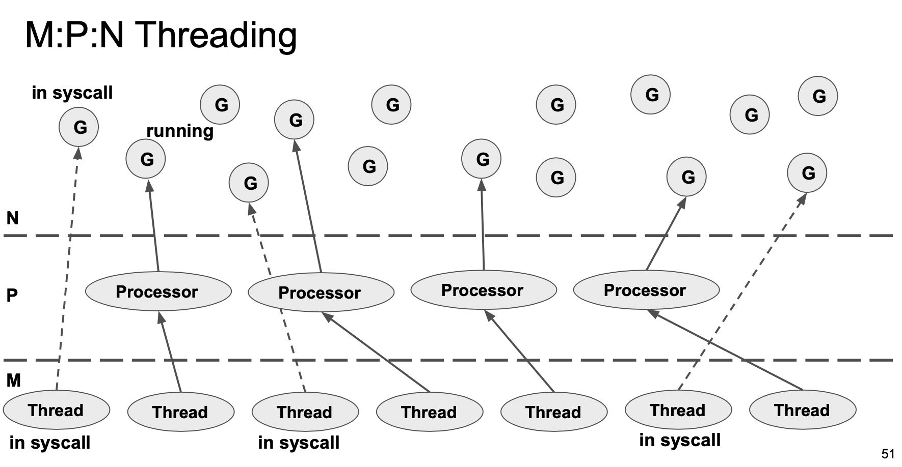

Go Scheduler: Implementing language with lightweight concurrency
Table of Contents
https://2019.hydraconf.com/2019/talks/7336ginp0kke7n4yxxjvld/
1. GMP结构来源
我总结GMP结构的出现有这么几点考虑：
- G(goroutine, M(multicore), P(processor)
- Threads不能太多，否则切换成本非常高
- 但是太少的话，进行Syscall的时候Thread会被占用，没有执行资源
- 所以在goroutine和thread之间必须增加一层processor
所以最后整个系统结构如下：
- Thread会绑定Processor去执行里面对应的goroutine
- Processor里面有执行goroutine所有的状态信息
- 所以要执行syscall的Thread会主动切换出去，让其他thread去执行当前processor.
- 执行完成syscall的goroutine会被放置在global run queue里面。

2. 调度策略Fairness
为了保证公平性，goroutine是可以被强占的，thread首先从processor的local run queue中拿到goroutine，然后local run queue里面的time slice是继承的。我的理解这里继承的意思是，如果某个goroutine是因为另外一个local run queue里面的goroutine阻塞的话，那么优先切换到这个依赖的goroutine并且继承之前的时间片。每61个sched tick就从global run queue拿goroutine. 进行network poller的goroutine在后台不断地被检查是否满足条件，然后进入global run queue.

3. Infinite Stack
其实可扩展的Stack设计上和连续内存分配非常类似：一种是使用链表结构，一种是数组结构。链表结构在这里叫做split stack, 每个stack由多个segment组成, 多个segment之间通过pointer连接起来，好处就是分配快，问题就是如果堆栈经常伸缩就容易傻逼了。而数组结构就是稍微有点费空间并且需要memcopy一次（将原来stack复制到新stack空间上），好处就是局部性好内存连续。GCC也有split stack功能，加上 `-fsplit-stack` 编译就行，但是也有每次进入堆栈之前需要check一下空间是否足够的问题。
现在没有抢占式策略，完全是co-operative的策略，实现起来非常取巧。上面不是有inifinite stack检查吗？将stack limit修改小一些，但是在函数调用入口必然会进行 `morestack` 的检查逻辑中，在这个检查中判断时间片超时情况。